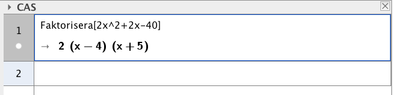
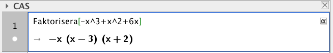
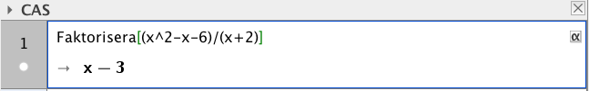
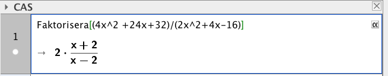

11. Faktorisering av polynom
Vi kan faktorisera polynom med hjälp av rötterna som löser nollställena för polynomet.
Betyder i klartext att andragradsuttrycket \(ax^2+bx+c\) kan vi skriva som \(a(x-x_1)(x-x_2)\) där \(x_1\) och \(x_2\) är rötterna för ekvationen \(ax^2+bx+c=0\).
Exempel 1 Faktorisera \(x^2-5x+4\).
Lösning
Vi söker nollställen för:
\(\begin{array}{rcll} x^2-5x+4&= &0 & \textrm{ }\\ x&= & \dfrac{5 \pm \sqrt{(-5)^2-4 \cdot 1\cdot 4}}{2 \cdot 1} & \\ x&= &\dfrac{5 \pm \sqrt{9}}{2} = \dfrac{5 \pm 3}{2}\\ x=\dfrac{5 - 3}{2}=1&\textrm{ eller } &x=\dfrac{5 + 3}{2}=4 &\\ \end{array}\)
Vi kan faktorisera \(x^2-5x+4\) som \((x-1)(x-4)\).
Exempel 2 Faktorisera \(2x^2-4\).
Lösning
Vi söker nollställena för:
\(\begin{array}{rcll} 2x^2-4&= &0 & \mid /2 \textrm{ }\\ x^2-2&= &0 & \textrm{ }\\ x^2&= &2 & \mid \sqrt{\quad} \textrm{ }\\ x&= &\pm\sqrt{2} & \textrm{ }\\ \end{array}\)
Vi har en 2 framför \(x^2\). Alltså är \(2x^2-4 = 2(x-\sqrt{2})(x+\sqrt{2})\).
Exempel 3 Faktorisera \(3x^2+6x+3\).
Lösning
Vi söker nollställena för
\(\begin{array}{rcll} 3x^2+6x+3&= &0 & \mid /3 \textrm{ }\\ x^2+2x+1&= &0 & \textrm{Antingen löser vi den med rotformel, }\\ (x+1)^2&= &0 & \textrm{eller så via att skriva } x^2+2x+1 \textrm{ som en kvadrat.}\\ \textrm{Blir 0 då } x+1&= &0 & \textrm{Vi har en så kallad dubbelrot.}\\ &&&\text{Betyder att grafen tangerar x-axeln. Ingen panik.}\\ x & = &-1 \\ \end{array}\)
Vi får \(3x^2+6x+3 = 3(x+1)(x+1)=3(x+1)^2\)
Exempel 4 Förenkla \(\dfrac{x^2+x-6}{x^2-4x+4}\).
Lösning
Vi tar och faktoriserar täljaren och nämnaren skillt för sig.
Täljaren: \(\dfrac{-1 \pm \sqrt{1^2 -4\cdot 1 \cdot (-6)}}{2\cdot 1} = \dfrac{-1 \pm \sqrt{25}}{2}= \dfrac{-1\pm 5}{2}\).
Rötterna är \(x_1 = \dfrac{-1-5}{2}=-3\) och \(x_2=\dfrac{-1+5}{2}=2\)
Täljaren kan faktoriseras till \((x+3)(x-2)\).
Nämnaren: \(x^2-4x+4 = (x-2)^2\), eller via rotformeln.
Betyder att \(\dfrac{x^2+x-6}{x^2-4x+4} = \dfrac{(x+3)(x-2)}{(x-2)^2} = \dfrac{x+3}{x-2}\).
Exempel 5 Faktorisera XX och XX/XX på Geogebra.
Visa hur Faktorisera kommandot fungerar i CAS.
VIDEO
- Öppna CAS på GeoGebra.
- Använd dig av kommandot Faktorisera(UTTRYCKET IN HÄR).
- Tryck Enter.
Uppgifter
- Faktorisera
- \(x^2-4x-5\)
Nollställena är \(x=-1\) och \(x=5\)
\(x^2-4x-5 = (x+1)(x-5)\)
- \(x^2+3x+2\)
Nollställena är \(x=-1\) och \(x=-2\).
\(x^2+3x+2 = (x+1)(x+2)\).
- \(2x^2+6x+4\)
Nollställena är \(x=-1\) och \(x=-2\). Vi har en 2:a framför \(x^2\).
\(2x^2+6x+4 =2(x+1)(x+2)\).
- \(x^2-4x-5\)
- Faktorisera
- \(x^2+x-12\)
Nollställena är \(x=3\) och \(x=-4\).
\(x^2+x-12=(x-3)(x+4)\).
- \(3x^2+9x+6\)
Nollställena är \(x=-2\) och \(x=-1\). Vi har en 3:a framför \(x^2\).
\(3x^2+9x+6 =3(x+2)(x+1)\).
- \(5x^2+15x-20\)
Nollställena är \(x=1\) och \(x=-4\). Vi har en 5:a framför \(x^2\).
\(5x^2+15x-20=5(x-1)(x+4)\).
- \(x^2+x-12\)
- Faktorisera följande polynom på Geogebra.
- \(2x^2+2x-40\)

- \(x^2-x\)

- \(-x^3+x^2+6x\)

- \(\dfrac{x^2-x-6}{x+2}\)

- \(\dfrac{4x^2+24x+32}{2x^2+4x-16}\)

- \(2x^2+2x-40\)
- Faktorisera
- \(\dfrac{1}{2}x^2+3x+4\)
Nollställena är \(x=-2\) och \(x=-4\).
\(\dfrac{1}{2}x^2+3x+4=\dfrac{1}{2}(x+2)(x+4)\).
- \(3x^2-19x+6\)
Nollställena är \(x=\dfrac{1}{3}\) och \(x=6\).
\(3x^2-19x+6=3(x-\dfrac{1}{3})(x-6)\).
- \(2x^2-4x+2\)
Vi har ett dubbelnollställe som är \(x=1\).
\(2x^2-4x+2=2(x-1)(x-1)=2(x-1)^2\).
- \(\dfrac{1}{2}x^2+3x+4\)
- *Förenkla
- \(\dfrac{x^2-3x+2}{x^2-1}\)
\(\dfrac{x^2-3x+2}{x^2-1}=\dfrac{(x-2)(x-1)}{(x+1)(x-1)}=\dfrac{x-2}{x+1}\)
- \(\dfrac{x^2-2x-3}{x^2-6x+9}\)
\(\dfrac{x^2-2x-3}{x^2-6x+9} = \dfrac{(x+1)(x-3)}{(x-3)(x-3)}=\dfrac{x+1}{x-3}\)
- \(\dfrac{x^2+x-2}{1-x}\)
\(\dfrac{x^2+x-2}{1-x} = \dfrac{(1-x)(-x-2)}{1-x} = -x-2\)
- \(\dfrac{x^2-3x+2}{x^2-1}\)
- *För vilket värde på \(a\) kan uttrycket \(\dfrac{x^2-a}{x+3}\) förkortas?
Vad gäller för täljaren om vi skall kunna förkorta?
Eftersom nämnaren är \(x+3\) så måste täljaren bestå av samma faktor.
Då \(a=9\) är täljaren \(x^2-9 = (x+3)(x-3)\), och då kan vi förkorta.